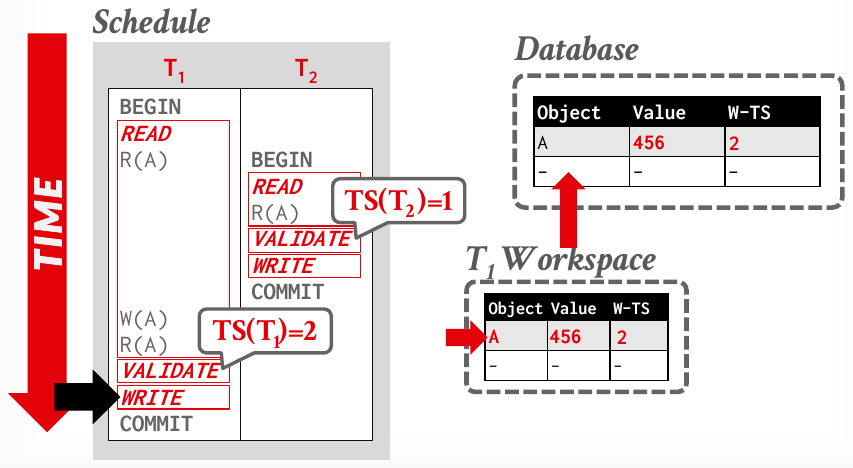
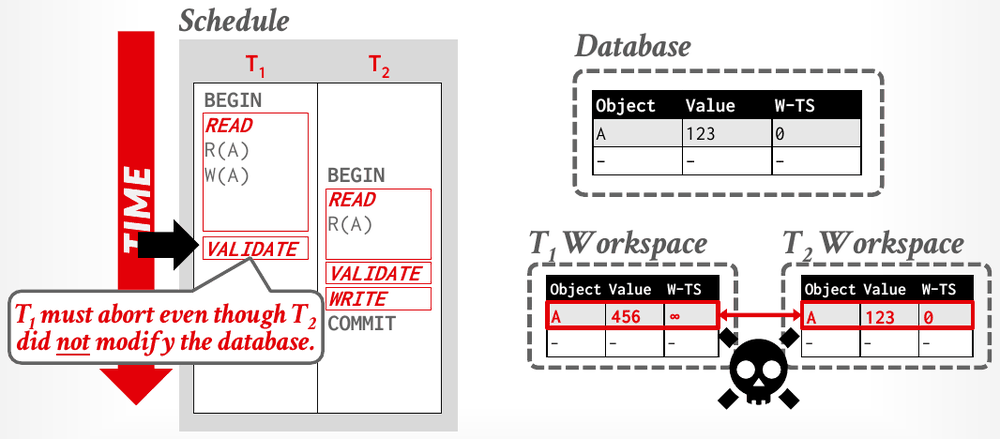
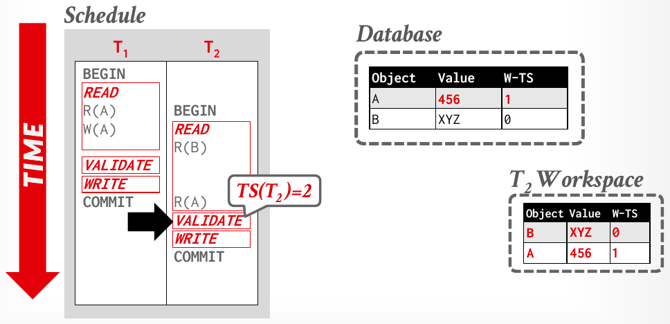
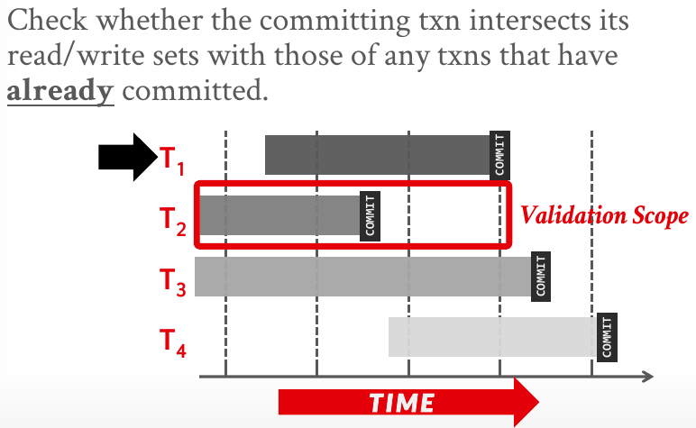

Database Internals in Go · Unit 7 · Lesson 3
Timestamps and Optimistic Concurrency Control
Use timestamps to fix a serialization order, run transactions through OCC's read, validation and write phases, and decide with forward or backward validation which transactions commit and which abort.
Two-phase locking makes every transaction ask for a lock before it touches anything, and Lesson 2 showed what that costs: waiting, deadlocks and the machinery to break them. Lecture #19 starts from the opposite assumption. If conflicts are rare and most transactions are short, most of that locking is wasted effort, and a protocol should be optimized for the case where nothing conflicts. This lesson covers the idea of ordering transactions by timestamps and the protocol the lecture builds on it, optimistic concurrency control. Project 4's SERIALIZABLE isolation level is a version of it.
Unit 7, Lesson 1: in Lecture #17's Example #2, T3 starts before T2, yet the only equivalent serial order is T2, T1, T3. Why?
Unit 3, Lesson 7: memory location M holds 20, and a thread runs __sync_bool_compare_and_swap(&M, 20, 30). What happens?
Unit 5, Lesson 8: a table has 1,000 rows. Predicate P1 has selectivity 0.1 and P2 has selectivity 0.5. Under the independence assumption, how many rows does the optimizer estimate for P1 AND P2?
Timestamp ordering
Slide 4 recalls that 2PL is pessimistic: it requires transactions to acquire locks on database objects before they may access them. Slide 5 makes the observation behind this lecture: if conflicts are rare and most transactions are short-lived, forcing them to acquire locks adds unnecessary overhead, and a better protocol could be optimized for the no-conflict case.
Timestamp ordering (T/O) uses timestamps instead of locks to decide the serialization order of transactions (slide 6). If TS(Ti) < TS(Tj), the DBMS must ensure that the execution schedule is equivalent to the serial schedule in which Ti appears before Tj. To check that, each database object, for example a tuple, carries extra fields that record the timestamps of the transactions that last accessed or modified it. Lesson 1 asked whether some serial order exists; T/O names the order in advance and makes the schedule match it.
Slide 7 sets the rules for the timestamps. Each transaction Ti gets a unique, fixed timestamp TS(Ti), and timestamps increase monotonically. Different protocols assign the timestamp at different times during the transaction, which matters below. There are three ways to generate them:
- A system or wall clock, such as the CPU clock, the RDTSC instruction or an external clock. The notes suggest UTC, to avoid daylight-saving problems.
- A logical counter. The notes warn that a counter can overflow and is hard to keep consistent across several machines.
- A hybrid of the two.
The Fall 2025 lecture teaches T/O through one protocol, optimistic concurrency control, and that is the protocol this lesson covers.
Optimistic concurrency control
Optimistic concurrency control (OCC) is a T/O protocol in which the DBMS creates a private workspace for each transaction (slide 9). Any object the transaction reads is copied into its workspace, and its modifications are applied to the workspace. No other transaction can see what is in it. When the transaction commits, the DBMS compares the workspace's write set with other transactions to see whether they conflict. If nothing conflicts, the write set is installed into the "global" database.
Every transaction goes through three phases (slide 10):
- Read phase. The DBMS tracks the transaction's read set and write set, the objects it has read and written, and stores its writes in the private workspace. It copies every tuple the transaction accesses from the shared database into the workspace, to ensure repeatable reads. Slide 12 adds that the lecture ignores, for now, what happens when a transaction reads or writes through an index.
- Validation phase. When the transaction invokes COMMIT, the DBMS assigns it a unique timestamp and checks whether it conflicts with other transactions.
- Write phase. If validation succeeds, the DBMS sets the write timestamp (W-TS) of every modified object in the workspace and installs them into the global database. Otherwise it aborts the transaction.
The timestamp is assigned at the start of the validation phase, not when the transaction begins (slide 15). The serialization order is therefore the order in which transactions validate. The notes sum up the division of labour: the read phase does all the work, and validation and write make up the commit protocol.

In the example the database starts with A = 123 and W-TS 0. T1 reads A into its workspace. T2 begins, reads A, validates, writes nothing and commits. T1 then writes A = 456 in its workspace and reads A again, getting its own 456 from the workspace. The equivalent serial order is T2, then T1: T2 read the old A, and T1 overwrote it afterwards.
#19 Timestamp Ordering Concurrency Control, "Optimistic concurrency" (10:47), slides 9–11: private workspaces, the three phases and the two-transaction example with its timestamps.
Validation
Slide 13 notes that the original OCC algorithm uses serial validation: one transaction validates at a time. Parallel validation is possible, but then each transaction must also check the read and write sets of other transactions that are validating at the same moment. Either way the DBMS has to permit only serializable schedules, and there are two approaches (slide 14):
- Forward validation checks whether the committing transaction's read and write sets intersect those of any active transactions, ones that have not yet committed.
- Backward validation checks them against transactions that have already committed. The slide marks it as the more common approach.
Forward validation and its three cases
In forward validation the committing transaction, which has just received its timestamp, is checked against every active transaction (slide 15). The notes add that a transaction that hasn't reached validation yet has timestamp ∞, so the committing transaction is always the older one. If TS(T1) < TS(T2), one of three conditions must hold:
- T1 completes its write phase before T2 begins its read phase (slide 16). Everything T1 does happens before T2, so this is simply a serial order.
- T1 completes its write phase before T2 starts its write phase, and T1 doesn't write any object T2 has read: WriteSet(T1) ∩ ReadSet(T2) = Ø (slide 17).
- T1 completes its read phase before T2 completes its read phase, and T1 doesn't modify any object that T2 reads or writes: WriteSet(T1) ∩ ReadSet(T2) = Ø and WriteSet(T1) ∩ WriteSet(T2) = Ø (slide 20).

Slide 19 runs the same reads and writes in a different order: T2 validates and writes first. Now T2 has the smaller timestamp, T2 commits logically before T1, and T2 reading the old A is exactly what that order requires, so it is safe to commit T1.

Together the two examples show what validation is for. It exists to catch a transaction that read a value that a transaction ordered before it then overwrote: it read too early and missed the write. In slide 18, T2 read A before T1's write would be installed, so the order T1 → T2 is impossible and T1 aborts. In slide 21, T2 read A after T1 installed it, so T2 saw T1's value, and the order T1 → T2 holds. The set conditions are how the protocol detects the first situation, so when you apply them, keep track of when each read happened.
#19 Timestamp Ordering Concurrency Control, "Validation types" (24:20), slides 13–21: serial and parallel validation, forward and backward validation, and the examples for each of the three cases.
Backward validation
Backward validation looks the other way. The notes say the DBMS checks the committing transaction against the read and write sets of the transactions that have already committed since the committing transaction started, using the same three conditions. Slides 22 and 23 compare the scope of the two checks on four transactions.

A transaction that committed before T1 started needs no check: case 1 holds, and T1 read everything it wrote from the global database.
The write phase
The write phase propagates the changes in the transaction's write set to the database, which makes them visible to other transactions (slide 24). Two designs:
- Serial commits use a global latch, so that only one transaction can be in the validation or write phase at a time.
- Parallel commits use fine-grained write latches, so several transactions can validate and write at once. Transactions acquire the latches in a sequential key order to avoid deadlocks.
These are latches, not locks: they are held only for the commit's critical section. The key order is the same discipline you used in Project 1, where a fixed order of the frame latch and the pool latch made a cycle impossible.
When OCC pays off
Slide 25 says OCC works well when the number of conflicts is low: ideally when all transactions are read-only, or when transactions access disjoint subsets of data. The notes add that a large database with a workload that isn't skewed has a low probability of conflict. OCC has its own problems, though:
- There is a high overhead for copying data into the private workspace.
- The validation and write phases can become a bottleneck.
- Aborts are more wasteful than in 2PL, because they only occur after a transaction has already executed.
- The notes add a timestamp allocation bottleneck.
#19 Timestamp Ordering Concurrency Control, "Commit phases" (44:24), slides 24–25: serial and parallel commits, and when OCC works well and when it doesn't.
OCC in Project 4
Project 4 builds optimistic multi-version concurrency control into the Go port of BusTub. Two parts of it come from this lesson.
- Each transaction gets a commit timestamp when it commits, and commit timestamps increase monotonically. The writeup says the commit timestamp determines the serialization order, which is OCC's rule that the order is the order of validation, not of begin. Commits run one at a time under a single mutex, the serial-commit design of slide 24.
- For the SERIALIZABLE isolation level, the writeup says: "We use OCC backward validation for serializable verification." At commit, a transaction is checked against the transactions that committed after it started. The writeup adds that "the verification method we talked about in the lecture only applies to a static database", so Project 4 extends it to catch inserted and deleted rows. Lesson 4 explains why that extension is needed.
Project 4 doesn't copy objects into a private workspace the way slide 9 does. Lessons 5 and 6 show the multi-version storage it uses instead.
Work it out
These are HW5 Question 3's true-or-false statements (f) to (h) and (j). Decide each one and say why before opening the result.
-
What to think about
What makes a validation fail, and how often can that happen if no two transactions touch the same object?
The method
Every validation condition intersects one transaction's write set with another's read or write set. Ask what those intersections are when the data is disjoint.
The result
True. The official solution: OCC is good to use when the number of conflicts is low. Slide 25 names disjoint subsets of data as one such case, and all-read-only transactions as the ideal.
-
What to think about
In which phase does an OCC transaction find out that it must abort, and what has it done by then?
The method
Compare with 2PL, where a transaction learns about a conflict when a lock request blocks, in the middle of its work.
The result
True. Slide 25: aborts are more wasteful than in 2PL because they only occur after a transaction has already executed. The whole read phase is thrown away.
-
What to think about
Where does a transaction's second read of an object get its value?
The method
Reread slide 10's description of the read phase, and check what a commit by another transaction changes: the global database or the reader's workspace.
The result
False. Slide 10: the DBMS copies every tuple the transaction accesses into its workspace to ensure repeatable reads. Later reads use that copy, so another transaction's commit can't change what the reader sees. (The notes tie the copy to the isolation level; follow the slide, which HW5 relies on.)
-
What to think about
Does OCC know a transaction's read set when the transaction begins?
The method
Look again at slide 21: when does T2 copy A into its workspace, and which value does it get?
The result
False. The read set is built during the read phase, and each object is copied into the workspace when the transaction first accesses it. In slide 21, T2 reads A after T1 committed and gets T1's 456, not the value A had when T2 began.
The homework behind these questions
The questions marked HW5 come from CMU's Homework #5: Question 3, with the original figures. Work each one out on paper first, then click the option you got. The quiz tells you at once whether it matches CMU's official answer, and explains why. To compare your working step by step, open the official solutions for Question 3.
Check your understanding
These questions use HW5 Question 3. The DBMS uses OCC with serial validation, so only one transaction is in the validation phase at a time, and each transaction does backward validation. A transaction begins its read phase with its first operation and switches to validation immediately after its last operation. If validation fails, the transaction is aborted at once. There are no other transactions. Time runs downward.
| Time | T1 | T2 | T3 |
|---|---|---|---|
| 1 | WRITE(B) | ||
| 2 | READ(A) | READ(C) | |
| 3 | WRITE(C) | ||
| 4 | WRITE(A) | ||
| 5 | |||
| 6 | READ(A) | ||
| 7 | READ(B) | ||
| 8 | VALIDATE? | WRITE(C) | |
| 9 | WRITE? | ||
| 10 | |||
| 11 | WRITE(A) | READ(D) | |
| 12 | VALIDATE? | ||
| 13 | WRITE? | ||
| 14 | READ(A) | ||
| 15 | |||
| 16 | WRITE(D) | ||
| 17 | VALIDATE? | ||
| 18 | WRITE? |
HW5 Q3(a): when is each transaction's timestamp assigned?
HW5 Q3(b): will T1 abort?
HW5 Q3(c): will T2 abort?
HW5 Q3(d): will T3 abort?
HW5 Q3(e): at time 14, does T3 read the value of A written by T1?
Primary sources: CMU 15-445/645 Fall 2025 Lecture #19 slides 4–25 and notes (sections 1–2); Homework #5 Question 3, parts (a) to (h) and (j), and its official solutions; the Project #4 writeup (Tasks 1.1, 3.2 and 4.4).